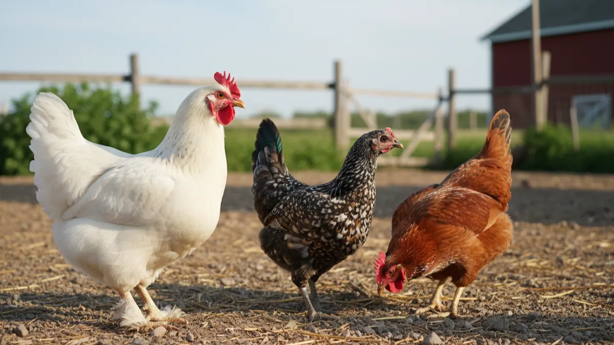

Yeni başlayanlar için tavuk ırkı seçimi: hangi tavuk?
Bol yumurta mı, tencerelik et mi, kendi civcivini çıkaran dayanıklı bir sürü mü? Amaca göre doğru tavuk ırkını seçmenin saha rehberi.

Kümesi kurdun, altlığı serdin, suluğu astın. Sıra en kritik soruda: içine hangi tavuğu koyacaksın? Çoğu kişi bu adımı atlar, pazardan gözüne güzel görüneni alır, sonra "benim tavuklar niye yumurtlamıyor" diye dertlenir. Oysa ırk seçimi, o kümesten bir yılda ne alacagini baştan belirleyen karardır. Yanlış ırk, doğru bakımı bile kurtarmaz.
Tavuk ırkı seçimi aslında tek bir soruya iniyor: sen bu işten ne bekliyorsun? Bol yumurta mı, tencerelik et mi, yoksa merada gezip kendi civcivini çıkaran dayanıklı bir sürü mü? Üçünü aynı anda veren tavuk yok. Olsa bile ortalamada kalır, hiçbirinde parlamaz. Gel, amaca göre ayıralım.
Yumurtacı tavuk ırkları: bol yumurta isteyene
Amacın kasada dizili yumurta, günlük satış, düzenli gelirse hibrit yumurtacılara bakacaksın. Bunlar tek iş için ıslah edilmiş makineler. Lohmann Brown, Isa Brown, Nick Chick (Hy-Line) ve yerli ıslah Atak-S bu grubun yıldızları. Kahverengi yumurtlarlar, iştahları yerindedir, 18-20. haftada yumurtaya girer ve pik dönemde neredeyse her gün bir yumurta verirler.
Rakama dökelim. İyi bakılan bir Lohmann Brown yılda 300-320 yumurta atar. Isa Brown ve Nick Chick de aynı bantta oynar. Atak-S biraz daha mütevazı, 250-280 arası, ama merada bizim hibritlere göre daha dayanıklıdır; köy koşulunda tökezlemez. 500 tavukluk bir yumurtacı sürüde günde 400-450 yumurta demek bu. Bu ölçekte işin nasıl yürüdüğünü 500 tavukla yumurta işine başlamak yazısında adım adım anlattım.
Şunu da baştan bilmekte fayda var: bu hibritler yem konusunda cömert olmanı ister. Pik dönemde günde tavuk başına 115-125 gram kaliteli yumurta yemi ister; ucuz yeme kaçarsan yumurta önce irilikten, sonra sayıdan kaybeder. Yumurtacı hibritin verdiği rakam, verdiğin yeme birebir bağlı. "Az yemle çok yumurta" diye bir formül yok; olsaydı herkes zengin olurdu.
Etçi ırklar: broiler ve ikili verim
Et için beslenen tavuk bambaşka bir hayvan. Ross 308 ve Cobb 500 broilerleri (etlik piliç) 6-7 haftada 2,2-2,6 kg canlı ağırlığa ulaşır. Yem dönüşümleri inanılmazdır, yaklaşık 1,6-1,8 kg yeme 1 kg et. Ama bu hız bir bedelle gelir: bacakları ağırlığı zor taşır, sıcağa dayanıksızdırlar, merada koşup gezmezler. Kısa, yoğun, disiplinli bir iştir; 40-45 günde hayvanı çıkarır, kümesi temizler, yeni partiye geçersin.
İkili verim (dual purpose) ırklar ise orta yol. Hem tatmin edici yumurta verir, hem de horozları tencerelik et olur. Sussex, Plymouth Rock (Barred Rock), Rhode Island Red, Marans bu kümede. Yılda 180-220 yumurta, iyi bir et karkası. Broiler kadar hızlı büyümez, hibrit kadar çok yumurtlamaz; ama tek sürüyle iki iş görmek isteyen küçük üreticinin gözdesidir.
Köy tavuğu ırkları: yerli ve dayanıklı
Yerli ırklar rakamda öne çıkmaz, dayanıklılıkta öne çıkar. Denizli horozu uzun ötüşüyle meşhurdur ama tavuğu iyi bir kuluçkacıdır. Gerze tavuğu Samsun yöresinin siyah-yeşil parlak tüylü yerlisidir, merada çok iyi yayılır, hastalığa direnci yüksektir. Sultan (Sultani) daha çok süs ve kültürel değeri olan, beyaz tüylü, sakin bir ırktır; ticari verimden çok koleksiyon için tutulur.
Yerli ırkların yıllık yumurtası 100-160 bandında gezinir; hibritin yarısı bile değil. Ama bu tavuklar kışın soğukta tökezlemez, yaz sıcağında bunalıp yumurtayı kesmez, merada kendi yemini arayıp bulur, ilkbaharda kuluçkaya yatıp sürüyü kendi çoğaltır. Yem masrafın da hibritin altında kalır çünkü gezinme alanında böcek, ot, tane toplayarak günün bir kısmını kendi karnını doyurmakla geçirir. Gerçek "köy yumurtası" pazarında bu yumurtaların sarısı daha koyu, kabuğu daha sert olur ve fiyatı da farklı olur. Bu farkın satışa nasıl yansıdığını köy yumurtası nasıl satılır yazısında ayrıntılandırdım.
Irk karşılaştırma tablosu: hangisi neye yarar?
| Irk | Amaç | Yıllık yumurta | Mizaç | Mera uyumu |
|---|---|---|---|---|
| Lohmann Brown | Yumurta | 300-320 | Sakin, uysal | Orta |
| Isa Brown | Yumurta | 300-320 | Sakin | Orta |
| Nick Chick | Yumurta | 290-310 | Hareketli | Orta |
| Atak-S (yerli ıslah) | Yumurta | 250-280 | Dengeli | İyi |
| Ross 308 / Cobb 500 | Et | - | Durgun, ağır | Zayıf |
| Sussex / Plymouth Rock | İkili verim | 180-220 | Meraklı, dost | İyi |
| Rhode Island Red | İkili verim | 200-250 | Baskın | İyi |
| Denizli | Yerli / kuluçka | 100-140 | Canlı | Çok iyi |
| Gerze | Yerli / dayanıklı | 120-160 | Uyanık, uçucu | Çok iyi |
| Sultan | Süs | 50-90 | Sakin | Zayıf |
Hibrit mi, saf ırk mı? Aradaki fark cebini ilgilendirir
Bu ayrımı kavramadan doğru seçim yapamazsın. Hibrit tavuk, iki farklı hattın melezlenmesiyle elde edilir; verimi yüksektir ama o verim tek nesle özeldir. Hibritin yumurtasından civciv çıkarırsan, çıkan tavuk ne anasına benzer ne verimini tutturur. Yani her yıl kuluçkahaneden ya da yarka üreticisinden yeniden almak zorundasın.
Saf ırk ise kendini tekrar eder. Gerze'den Gerze, Sussex'ten Sussex çıkar. Verim düşüktür ama sürünün kendini çoğaltması bedavaya gelir. Karar aslında basit: yüksek verim isteyip her yıl yenileme masrafına razı mısın, yoksa düşük verimle yetinip kendi kendine dönen bir sürü mü istiyorsun? İkisinin ortası yok.
Yeni başlayanların en sık düştüğü tuzak, pazardan ucuza aldığı melez tavuktan hibrit verimi beklemek. Böyle bir sürüde ne yumurta tutar ne et. Köye dönüp tavukçuluğa başlayanların battığı noktaları anlattığım yazıda bu hatayı ilk sıraya koymamın sebebi bu.

500 Tavukluk Tavuk Çadırı
Hangi ırkı seçersen seç, 500'lük bir sürüyü sağlıklı barındıracak, kışın nefes alan yazın serinleyen bir alan şart; yalıtımlı bir tavuk çadırı bu işi ilk günden doğru kurar.
İklim ve meraya göre seçim: yerine göre tavuk
Bir ırk her yerde aynı performansı vermez. Sıcak bölgedeysen (Akdeniz, Güneydoğu) broiler ve ağır hibritler yazın sıcak stresine girer, yumurta düşer, ölüm artar. O iklimde hafif, tüyü açık renk, merada gölge arayabilen ırklar daha rahat eder. Sıcakla mücadeleyi yazın kümes nasıl serin tutulur yazısında derinlemesine işledim.
Soğuk ve rakımlı bölgedeysen (Doğu, İç Anadolu yaylaları) tersine, iri gövdeli, kalın tüylü, ibiği küçük ırklar avantajlıdır; büyük tek parça ibikli tavuklar kışın ibik donması yaşar. Gerze gibi yerliler bu koşula fabrikadan çıkmış gibi uyumludur.
Merada gezip otlanan bir sistem mi kuruyorsun? O zaman uçmayı, tehlikeyi sezmeyi, yem aramayı bilen uyanık ırk lazım. Hibrit yumurtacı merada da yumurtlar ama yırtıcıya karşı beceriksizdir. Gezen tavuk sistemi kurarken ırk seçimi çit planı kadar önemlidir.
Temin: kuluçkahane mi, köy pazarı mı?
İyi bir başlangıç, sağlıklı ve doğru yaşta hayvanla olur. Ticari yumurtacı ve etçiyi kuruluş belgeli kuluçkahane veya yarka üreticisinden al. Aşıları yapılmış, yaşı belli, kaydı olan yarka; pazardan alacağın kaynağı belirsiz tavuktan her zaman ucuza gelir; çünkü hastalık getirmez, verimi bellidir. Yarka alırken nelere bakacağını yarka alırken dikkat edilecekler yazısında madde madde yazdım.
Yerli ırkı ise çoğu zaman köy pazarından, tanıdık üreticiden ya da ırkı koruyan yetiştiricilerden bulursun. Burada risk aşısız hayvan ve karışık kan. Aldığın hayvanı sürüye katmadan önce mutlaka 2-3 hafta ayrı tut, gözle; bir yerden gelen tek hasta hayvan bütün kümesi silip süpürebilir.
Yeni başlayana net tavsiye
Yıllardır sahada gördüğüm en sağlıklı başlangıç şu: para kazanmak, düzenli yumurta satmak istiyorsan Atak-S ya da Lohmann/Isa Brown ile başla. Atak-S köy koşuluna daha uygun, yerli ıslah olduğu için temini de kolaylaşıyor. Hem yumurta hem et, hem de kendi civcivini isteyen, işi ağırdan almak isteyen için Sussex ya da Plymouth Rock gibi ikili verim ırkları ideal. Sadece dayanıklılık, gezen sistem, gerçek köy yumurtası peşindeysen Gerze ya da Denizli yerlileri.
Kaç tavukla başlayacağın da ırk kadar önemli. 100-150'lik bir grupla eli alıştır, altlığı, suyu, yemi, yumurta toplamayı otur; sonra 500'e, oradan bine çık. Ölçek büyüdükçe barınak da büyür; tavuk başına kapalı alanda 4-5 hayvan, gezinme alanında daha ferah bir hesap tutturmalısın. Doğru ırkı, doğru sayıda, doğru barınağa koyduğun gün bu işin yarısını çözmüş olursun. Kalan yarısı bakım; o da her sabah kümese girdiğinde biraz daha oturur.
Sık sorulanlar
En çok yumurtlayan tavuk hangisi?
Yeni başlayan hangi tavuk ırkıyla başlamalı?
Hibrit tavukla saf ırk arasındaki fark nedir?
Köy yumurtası için hangi ırk alınmalı?
Broiler tavuk merada beslenir mi?
Yerli tavuk ırkları neden az yumurtlar?
Projenizi birlikte planlayalım
Kapasitenizi ve bölgenizi yazın; ölçü ve teklifi birlikte çıkaralım.
Kapasitenizi yazın